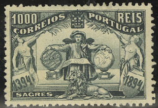
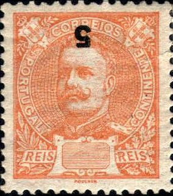
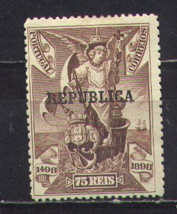

Return To Catalogue - Portugal overview
Note: on my website many of the
pictures can not be seen! They are of course present in the
catalogue;
contact me if you want to purchase the catalogue.
For stamps of Portugal issued from 1872 to 1894, click here.

'Talent de bien faire' 5 r orange 10 r lilac 15 r brown 20 r violet 'Primeira Expedicao' 25 r green 50 r blue 75 r red 80 r green 100 r brown 'Sagres' 150 r red 300 r blue on lilac 500 r lilac on lilac 1000 r black
These stamps were cancelled with '1394 Centenario 1894' (see image above), they have perforation 14.
Value of the stamps |
|||
vc = very common c = common * = not so common ** = uncommon |
*** = very uncommon R = rare RR = very rare RRR = extremely rare |
||
| Value | Unused | Used | Remarks |
| 5 r | * | * | |
| 10 r | * | * | |
| 15 r | ** | ** | |
| 20 r | ** | ** | |
| 25 r | ** | * | |
| 50 r | ** | ** | |
| 75 r | *** | *** | |
| 80 r | *** | *** | |
| 100 r | *** | *** | |
| 150 r | *** | *** | |
| 300 r | R | *** | |
| 500 r | R | R | |
| 1000 r | RR | R | |

These stamps exist with overprint 'ACORES' to be used in Azores


2 1/2 r black 5 r yellow 10 r lilac 15 r brown 20 r violet 25 r green and lilac 50 r blue and brown 75 r red and brown 80 r green and brown 100 r brown and grey 150 r red and brown 200 r blue and brown 300 r blue and brown 500 r brown and blue 1000 r violet and blue
These stamps have perforation 12.
Value of the stamps |
|||
vc = very common c = common * = not so common ** = uncommon |
*** = very uncommon R = rare RR = very rare RRR = extremely rare |
||
| Value | Unused | Used | Remarks |
| 2 1/2 r | * | * | |
| 5 r | ** | ** | |
| 10 r | *** | *** | |
| 15 r | *** | *** | |
| 20 r | *** | *** | |
| 25 r | * | * | |
| 50 r | *** | *** | |
| 75 r | R | R | |
| 80 r | RR | RR | |
| 100 r | R | R | |
| 150 r | RR | RR | |
| 200 r | RR | RR | |
| 300 r | RR | RR | |
| 500 r | RR | RR | |
| 1000 r | RR | RR | |
Forgeries exist of the values 50 r, 75 r, 80 r and 100 r, examples:
Filled-in 'A'
I've been told that these four stamps are made by Fournier. They were offered for 2 Swiss Francs (all 4 of them) as 1st choice forgeries in Fournier's 1914 pricelist. The distinguishing characteristics are: the impression is quite rough on the forgeries. The 'A' of 'PORTUGAL' is filled in. At the back a small latin text appears, it is spelt 'nunc' in the originals, but 'nune' in the forgeries. The star in this text has 8 rays in the forgery, but only 6 in the genuine stamps. These forgeries were also used to make forged stamps of Azores. For more information on these forgeries, check the following website: http://www.tabacaria.org/Selos/Continoutros/StAntonio.htm. Other sources (www.bondskeuringsdienst.nl/BKD.pps), claim that these forgeries were made by Erasmus Oneglia.
I've been told that the next two stamps are also Fournier forgeries, though they have an 'open A' of 'PORTUGAL':
Forgeries?


2 1/2 r grey 5 r orange 10 r green 15 r brown 15 r green 20 r violet 25 r green 25 r red 50 r blue 65 r blue 75 r red 75 r brown on yellow (value in red) 80 r lilac 100 r blue on blue 115 r brown on red 130 r brown on yellow 150 r brown on yellow 180 r lilac on red 200 r lilac 300 r blue on red 500 r black on blue (value in red)
I've been told that the values 2 1/2 r, 5 r, 10 r, 15 r brown, 20 r and 25 r red exist without value inscription (I have seen the 20 and 25 r). I have also seen a misprint of the 5 r with inverted value overprint. The 2 1/2 r also seems to exist in this condition. Example of an inverted value overprint:

(Inverted value overprint on the 5 r orange)
Stamps in similar designs were issued for the Portuguese colonies (country name different for each country), click here for more information.
Value of the stamps |
|||
vc = very common c = common * = not so common ** = uncommon |
*** = very uncommon R = rare RR = very rare RRR = extremely rare |
||
| Value | Unused | Used | Remarks |
| 2 1/2 r | c | vc | |
| 5 r | c | vc | |
| 10 r | c | vc | |
| 15 r brown | *** | * | |
| 15 r green | *** | c | |
| 20 r | c | c | |
| 25 r green | *** | c | |
| 25 r red | c | vc | |
| 50 r | c | c | Two shades of blue were issued |
| 65 r | c | c | |
| 75 r red | *** | c | |
| 75 r brown on yellow | c | c | |
| 80 r | * | c | |
| 100 r | c | c | |
| 115 r | * | * | |
| 130 r | * | * | |
| 150 r | *** | ** | |
| 180 r | * | * | |
| 200 r | * | c | |
| 300 r | * | * | |
| 500 r | * | * | |


2 1/2 r green 5 r red 10 r lilac 25 r green 50 r blue 75 r brown 100 r brown 150 r brown
Click here for pictures of similar stamps of the Portuguese colonies
Value of the stamps |
|||
vc = very common c = common * = not so common ** = uncommon |
*** = very uncommon R = rare RR = very rare RRR = extremely rare |
||
| Value | Unused | Used | Remarks |
| 2 1/2 r | c | c | |
| 5 r | c | c | |
| 10 r | * | * | |
| 25 r | c | c | |
| 50 r | * | * | |
| 75 r | *** | ** | |
| 100 r | ** | ** | |
| 150 r | *** | *** | |
Overprinted 'REPUBLICA' (1911)


2 1/2 r green 'REIS 15 REIS' on 5 r red 25 r green 50 r blue 75 r brown 80 on 150 r yellow 100 r brown '1$000' on 10 r lilac
Value of the stamps |
|||
vc = very common c = common * = not so common ** = uncommon |
*** = very uncommon R = rare RR = very rare RRR = extremely rare |
||
| Value | Unused | Used | Remarks |
| 2 1/2 r | c | c | |
| 15 r on 5 r | c | c | |
| 25 r | c | c | |
| 50 r | * | c | |
| 75 r | *** | *** | |
| 80 r on 150 r | *** | *** | |
| 100 r | * | * | |
| 1$000 on 10 r | *** | *** | |


2 1/2 r lilac 5 r black 10 r green 15 r brown 20 r red 25 r brown 50 r blue 75 r brown 80 r grey 100 r yellow on green 200 r green on red 300 r black on blue 500 r olive and brown 1000 r blue and black
These stamps have perforation 14 x 15.
Value of the stamps |
|||
vc = very common c = common * = not so common ** = uncommon |
*** = very uncommon R = rare RR = very rare RRR = extremely rare |
||
| Value | Unused | Used | Remarks |
| 2 1/2 r | c | c | |
| 5 r | c | c | |
| 10 r | c | c | |
| 15 r | * | * | |
| 20 r | c | c | |
| 25 r | c | vc | |
| 50 r | c | c | |
| 75 r | * | * | |
| 80 r | * | * | |
| 100 r | ** | * | |
| 200 r | * | c | |
| 300 r | * | * | |
| 500 r | ** | ** | |
| 1000 r | *** | *** | |
Overprinted 'REPUBLICA' in red (except for 20 r in green) (1910)


2 1/2 r lilac 5 r black 10 r green 15 r brown 20 r red 25 r brown 50 r blue 75 r brown 80 r grey 100 r yellow on green 200 r green on red 300 r black on blue 500 r olive and brown 1000 r blue and black
Value of the stamps |
|||
vc = very common c = common * = not so common ** = uncommon |
*** = very uncommon R = rare RR = very rare RRR = extremely rare |
||
| Value | Unused | Used | Remarks |
| 2 1/2 r | c | c | |
| 5 r | c | c | |
| 10 r | c | c | |
| 15 r | c | c | |
| 20 r | * | c | |
| 25 r | c | c | |
| 50 r | ** | c | |
| 75 r | ** | c | |
| 80 r | * | * | |
| 100 r | c | c | |
| 200 r | * | * | |
| 300 r | * | * | |
| 500 r | * | * | |
| 1000 r | ** | ** | |
For stamps of Portugal issued after 1910, click here.
{kind=link}